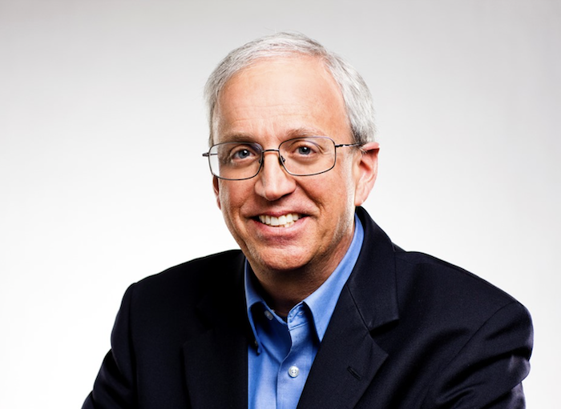

Program
On each day, the conference schedule will run from 2:00 pm to 7:00 pm UTC.
Please, note that:
(L) in front of a paper title refers to 20mins presentation time
(15mins talk + 5mins Q&A)
(S) in front of a paper title refers to 10mins presentation time
(8mins talk + 2mins Q&A)
Please check the Attend page for the instructions to access the symposium virtual space.
| Thursday - October 13, 2022 | ||
|---|---|---|
| Time (UTC) | Video | Activity |
| 2:00 pm - 2:10 pm | Opening Remarks | |
| 2:10 pm - 3:10 pm |
Keynote I: "Networks-on-Chips and Internet-of-Things Systems"
Speaker: Marilyn Wolf (University of Nebraska—Lincoln) Chair: Mahdi Nikdast (Colorado State University) |
|
| 3:10 pm - 3:20 pm | BREAK | |
| 3:20 pm - 4:20 pm |
Special Session I: "Design Challenges of Intra- and Inter-
Chiplet Interconnection"
Organizers: Chixiao Chen (Fudan University), Jieming Yin (Lehigh University), Yarui Peng (University of Arkansas), Maurizio Palesi (University of Catania), Wenxu Cao (University of Electronic Science and Technology of China), Letian Huang (University of Electronic Science and Technology of China), Amit Kumar Singh (University of Essex), Haocong Zhi (South China University of Technology), and Xiaohang Wang (Zhejiang University) DOI: 10.1109/MDAT.2022.3203005 |
|
| 4:20 pm - 4:35 pm | BREAK | |
| 4:35 pm - 5:35 pm |
Regular Session I: "Say Goodbye to Deadlocks!"
Chair: Ryan G. Kim (Colorado State University) |
|
| 4:35 pm |
(L) Traversal Packets: Opportunistic Bypass Packets for Deadlock Recovery
|
|
| 4:55 pm |
(L) Deadlock-Freedom in Computational Neuroscience Simulators
|
|
| 5:15 pm |
(L) JARVA: Joint Application-Aware Oblivious Routing and Static Virtual Channel Allocation
|
|
| 5:35 pm - 5:50 pm | BREAK | |
| 5:50 pm - 7:00 pm |
Regular Session II: "NoCs modeling and security!"
Chair: Mayank Parasar (Samsung, USA) |
|
| 5:50 pm |
(L) SynFull-RTL: Evaluation Methodology for RTL NoC Designs
|
|
| 6:10 pm |
(L) Eavesdropping Attack Detection using Machine Learning in Network-on-Chip Architectures
|
|
| 6:30 pm |
(L) BHT-NoC: Blaming Hardware Trojans in NoC Routers
|
|
| 6:50 pm |
(S) NOICER : Mitigating NoC Side-Channel Attacks using encrypted addresses and remapping
|
|
| Friday - October 14, 2022 | ||
|---|---|---|
| Time (UTC) | Video | Activity |
| 2:00 pm - 3:00 pm |
Keynote II: Reflections on 21 years of NoCs
Speaker: William Dally (NVIDIA and Stanford University) Chair: Radu Marculescu (University of Texas, Austin) |
|
| 3:00 pm - 3:10 pm | BREAK | |
| 3:10 pm - 3:50 pm |
Regular Session III: "NoCs and Emerging Applications"
Chair: Cédric Killian (Université de Rennes 1 and IRISA/INRIA, France) |
|
| 3:10 pm |
(L) RB-OLITS: A Worst-case Reorder Buffer Size Reduction Method for 3D-NoC
|
|
| 3:30 pm |
(L) A Many-ported and Shared Memory Architecture for High-Performance ADAS SoCs
|
|
| 3:50 pm - 4:00 pm | BREAK | |
| 4:00 pm - 5:00 pm |
Special Session II: "Electronic, Wireless, and Photonic
Network-on-Chip Security: Challenges and Countermeasures"
Organizers: Sudeep Pasricha (Colorado State University), John Jose (IIT Guwahati), and Sujay Deb (IIIT Delhi) DOI: 10.1109/MDAT.2022.3203017 |
|
| 5:00 pm - 5:10 pm | BREAK | |
| 5:10 pm - 6:40 pm |
NOCS15++: Anniversary Panel for 15++ Years of NOCS
Organizer & Moderator: Radu Marculescu (University of Texas, Austin) Participants: William Dally (NVIDIA and Stanford University), Axel Jantsch (TU Wien), Michael Kishinevsky (Intel), and Umit Ogras (University of Wisconsin) |
|
| 6:40 pm - 6:50 pm | Closing Remarks and Best Paper Award announcement | |
Keynote Talks
Keynote I
Date: Thursday - October 13, 2022
Time: 2:10 pm - 3:10 pm (UTC)
Speaker: Marilyn Wolf (University of Nebraska—Lincoln)
Title: Networks-on-Chips and Internet-of-Things Systems
Chair: Mahdi Nikdast (Colorado State University)
Video:
Abstract:
Networks-on-chips are well established as essential components of multiprocessors in both the
workstation and embedded spaces. However, NoCs are not widely used in Internet-of-Things computing
platforms. Network-on-chip technology should be well-suited to some of the requirements of this
domain: heterogeneous computing, multiple circuit and device technologies. However, the cost of
current NoC and heterogeneous technologies is out of reach for most IoT applications. This talk will
explore the barriers to the deployment of networks-on-chips on IoT computing platforms and possible
solutions.
Bio:
Marilyn Wolf is Elmer E. Koch Professor of Engineering and Director of the School of Computing at
the University of Nebraska—Lincoln. She received her BS, MS, and PhD in electrical engineering
from Stanford University in 1980, 1981, and 1984. She was with AT&T Bell Laboratories from 1984 to 1989,
was on the faculty of Princeton University from 1989 to 2007 and was Farmer Distinguished Chair in
Embedded Computing Systems and GRA Eminent Scholar at the Georgia Institute of Technology from 2007
to 2019. Her research interests include cyber-physical systems, Internet-of-Things, embedded
computing, embedded computer vision, and VLSI systems. She has received the IEEE Kirchmayer Graduate
Teaching Award, the IEEE Computer Society Goode Memorial Award, the ASEE Terman Award, and IEEE
Circuits and Systems Society Education Award. She is a Fellow of the IEEE and ACM and a Golden Core
member of IEEE Computer Society. She has been elected to Phi Beta Kappa and Tau Beta Pi. She became
an action figure in 2018.
⇧ Back to the first-day program
Keynote II
Date: Friday - October 14, 2022
Time: 2:00 pm - 3:00 pm (UTC)
Speaker: William Dally (NVIDIA and Stanford University)
Title: Reflections on 21 years of NoCs
Chair: Radu Marculescu (University of Texas, Austin)
Video:
Abstract:
In the 21 years since the "Route Packets, Not Wires" paper was published at DAC 2001, NoCs have
become ubiquitous. They are used in GPUs, CPUs, and all kinds of specialized accelerators, largely
replacing buses as the communication backbone of digital systems. An efficient NoC is critical to
the performance and energy efficiency of a modern digital system. This talk will explore the best
way to build a NoC today given our 21 years of experience. Things should be kept simple and fast. To
minimize delay and energy, the topology should be a mesh, perhaps with diagonals. An extremely
simple self-timed router with 100ps latency makes minimizing hop count irrelevant. Latency is
comparable to dedicated wires. Simple two-cycle request-acknowledge flow control suffices. There is
no need for virtual channels to multiplex wires. Wires are plentiful. Optimized circuits to drive
the wires are critical for energy efficiency. Efficient synchronizers are critical to optimize
latency. The talk will close with some future directions for research on NoCs/NoPs.
Bio:

Bill Dally joined NVIDIA in January 2009 as chief scientist, after spending 12 years at Stanford
University, where he was chairman of the computer science department. Dally and his Stanford team
developed the system architecture, network architecture, signaling, routing and synchronization
technology that is found in most large parallel computers today. Dally was previously at the
Massachusetts Institute of Technology from 1986 to 1997, where he and his team built the J-Machine
and the M-Machine, experimental parallel computer systems that pioneered the separation of mechanism
from programming models and demonstrated very low overhead synchronization and communication
mechanisms. From 1983 to 1986, he was at California Institute of Technology (CalTech), where he
designed the MOSSIM Simulation Engine and the Torus Routing chip, which pioneered "wormhole" routing
and virtual-channel flow control. He is a member of the National Academy of Engineering, a Fellow of
the American Academy of Arts & Sciences, a Fellow of the IEEE and the ACM, and has received the ACM
Eckert-Mauchly Award, the IEEE Seymour Cray Award, and the ACM Maurice Wilkes award. He has
published over 250 papers, holds over 120 issued patents, and is an author of four textbooks. Dally
received a bachelor's degree in Electrical Engineering from Virginia Tech, a master’s in Electrical
Engineering from Stanford University and a Ph.D. in Computer Science from CalTech. He was a
cofounder of Velio Communications and Stream Processors.
⇧ Back to the second-day program
Special Sessions
Special Session I
Date: Thursday - October 13, 2022
Time: 3:20 pm - 4:20 pm (UTC)
Title: Design Challenges of Intra- and Inter- Chiplet Interconnection
Organizers: Chixiao Chen (Fudan University),
Jieming Yin (Lehigh University),
Yarui Peng (University of Arkansas),
Maurizio Palesi (University of Catania),
Wen-Xu Cao (University of Electronic Science and Technology of China),
Letian Huang (University of Electronic Science and Technology of China),
Amit Kumar Singh (University of Essex),
Haocong Zhi (South China University of Technology),
and
Xiaohang Wang (Zhejiang University)
DOI: 10.1109/MDAT.2022.3203005
Agenda
Simulation methodology for chiplet-based many-core system
Xiaohang Wang
An all-digital 2.5D intra-chiplet communication PHY
Chixiao Chen
In-package network design - An architecture's perspective
Jieming Yin
Optimizations on modular turn restriction scheme
Wen-Xu Cao
Chiplet-package co-design with E3DA holistic and in-context EDA flows
Yarui Peng
Multi-objective hardware-mapping co-optimisation for chiplet-based DNN accelerators
Maurizio Palesi
⇧ Back to the first-day program
Special Session II
Date: Thursday - October 14, 2022
Time: 4:00 pm - 5:00 pm (UTC)
Title: Electronic, Wireless, and Photonic Network-on-Chip Security: Challenges and
Countermeasures
Organizers:
Sudeep Pasricha (Colorado State University),
John Jose (IIT Guwahati),
and
Sujay Deb (IIIT Delhi)
DOI: 10.1109/MDAT.2022.3203017
Agenda
Opening remarks
Sudeep Pasricha
Hardware Trojan Management Approaches in Electronic NoC based SoCs
John Jose
Security Threats in Wireless NoC and Efficient Countermeasures
Sujay Deb
Hacking Light: Enabling Security in Photonic NoC Architectures
Sudeep Pasricha